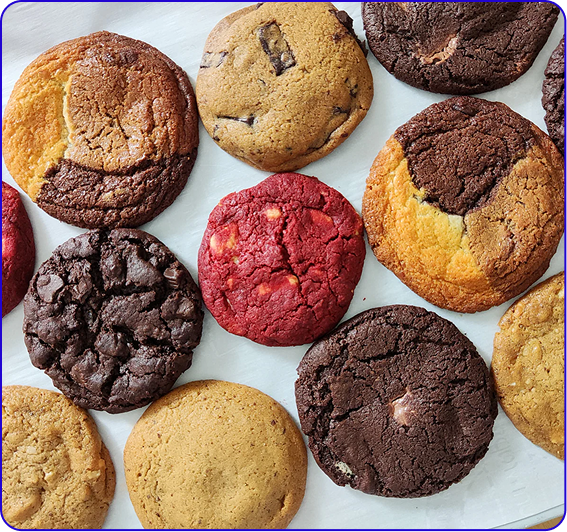

Welcome to Dohful! We are India’s first Craft Cookie brand.
On reading this, you may wonder what craft cookies are? How are they different from normal cookies? What’s special? Is this a marketing jargon? Or is it really something different or unique happening here?
Craft cookies are cookies as they should be, as they were meant to be. Cookies as they were made originally. You know before the times we delved so much into machines that making things using your own hands became uncool.
A good cookie, rather a perfect cookie should not just be perfect in taste. It should have the perfect texture — a delicate balance of soft and crunchy. A nice crunchy exterior but a soft, gooey center. And this is wildly missing from the cookies elsewhere.
With all the advancement and our over-reliance on machines to do everything for us, we lost the art or craft part of making cookies. As true in most scenarios, true magic only comes out when we balance the science and art of doing something.
If technology makes things frictionless, art makes it peaceful and satisfying.
The same is with our cookies. We try making our cookies as they should be (a symphony of flavors & textures) by having a balance between art and technology and that defines why we call ourselves Craft.
It involves selecting the finest ingredients like the chocolates or nuts that go into the cookie to how the flour is treated before it is used.
It involves mixing a dough using the machine but cutting the chocolate chunks by hand to achieve the perfectly imperfect chunks. Scooping out the dough with hands and not using any molds so that the cookies do not look like members of a pack.
Baking in the best of the ovens, but standing in front of it, gazing at the cookies while they bake. It’s mesmerizing seeing the dough balls (scoops) spreading out to form the perfect cookies.
Chilling the dough in the fridge but checking the temperature of every cookie dough ball before it goes into the oven for baking.
All of these things make up our craft.
Ultimately by calling it craft, you can expect high quality, true-to-its-roots, soft-baked, real genuine cookies.